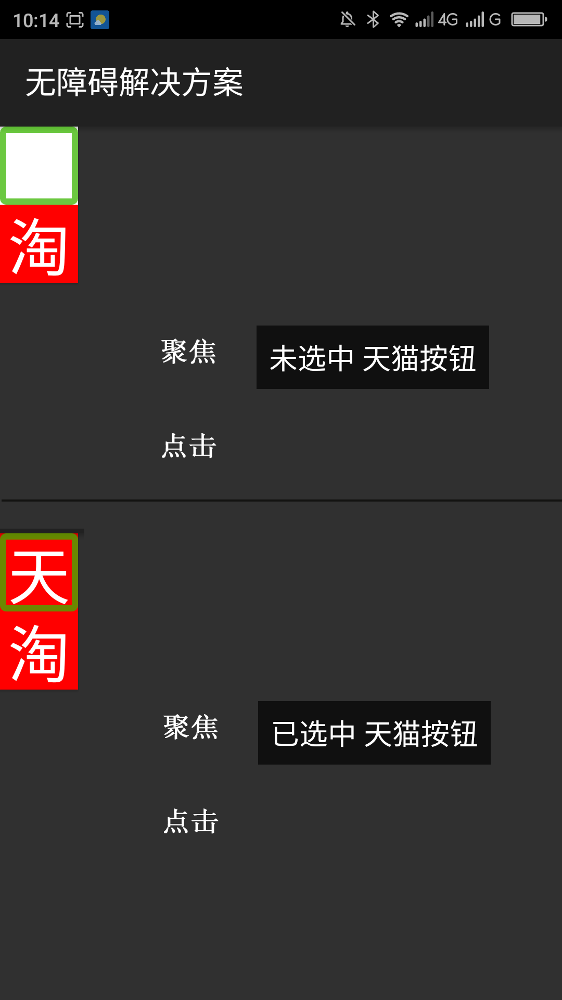
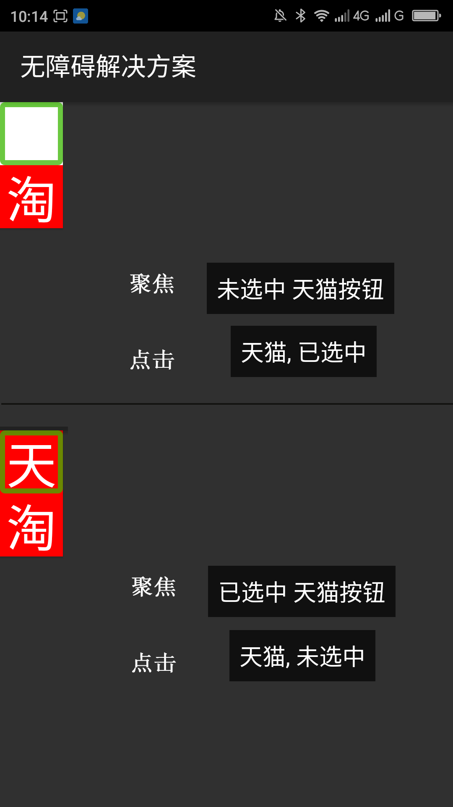

让不朗读选中状态的标准控件朗读选中状态的正确方法____20160519
【问题描述】
一些产品中会使用没有选中状态的标准控件改变背景颜色、控件形状、大小等来代表选中状态，如：用一个按钮（Button）背景为红色代表选中，背景为白色代表没有选中，因为这些标准控件本身没有选中状态，所以屏幕阅读器不会朗读以样式展示的选中状态，用户就无法知道控件的当前状态。为了让用户知道控件的选中状态一些开发者在控件的android:contentDescription属性中添加了状态，这种方法是不合理的。这种方法破坏了屏幕阅读器本身对于控件的朗读顺序，而且此种方法不能很好的兼容多种语言，还有不同的开发可能会提供不同的词语来表示选中状态，如一些开发者提供“已选中”，另外一些提供“选中”……还有一个比较严重的问题是用此方法设置的选中状态不能及时朗读出，当用户选中之后要重新让此控件获得焦点才能知道当前的选中状态。正确的方法是改变无障碍事件中的选中状态，让屏幕阅读器自己去识别。而且选中状态改变之后能马上朗读出。
【问题解决方案描述】
正确的方法是利用setAccessibilityDelegate()方法给标准控件添加AccessibilityDelegate,在Accessibility中重写onInitializeAccessibilityEvent()和onInitializeAccessibilityNodeInfo()两个方法，在onInitializeAccessibilityEvent()方法中调用AccessibilityEvent.setChecked()方法设置选中状态，在onInitializeAccessibilityNodeInfo()方法中调用AccesibilityNodeInfo.setCheckalbe(true)方法（此方法代表此控件是一个可被选中的控件）、调用AccessibilityNodeInfo.setChecked()设置选中状态。还有在设置选中状态的监听事件（OnClickListener监听器）中调用sendAccessibilityEvent(AccessibilityEvent.TYPE_VIEW_SELECTED)。这样设置之后的选中状态是由屏幕阅读器自动识别，而且点击之后能正确、及时的朗读出选中状态。
【前后效果图对比】
|  |  |
| 优化前，聚焦朗读“未选中 天猫按钮”，点击响应事件，无语音提示，重新聚焦朗读“已选中 天猫按钮”，点击响应事件，无语音提示； | 优化后，聚焦朗读“未选中 天猫按钮”，点击响应事件，提示“天猫 已选中”，重新聚焦朗读“已选中 天猫按钮”，点击响应事件，提示“天猫 未选中”； |